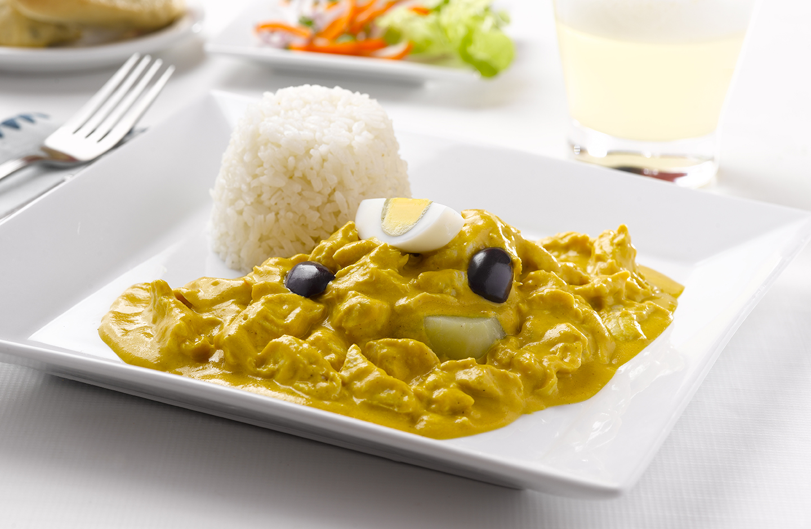

Receta del Ají de Gallina

Ingredientes
- 1 Pechuga de Gallina
- 1 Unidad de MAGGI cubo gallina
- 1 Lata IDEAL Cremosita
- 8 Rebanadas de pan Molde
- 2 Huevos
- 2 Tazas de Arroz cocido
- 2 Papas Blancas cocidas/li>
- 1 Cebolla roja
- 1 Cucharadita de Ajo Molido
- 4 Cucharadas de Ají Amarillo Molido
- 4 Aceitunas Negras
- 1 Cucharadita de Palillo
- 1/4 de Taza de Pecanas
- 2 Cucharadas de Aceite Vegetal